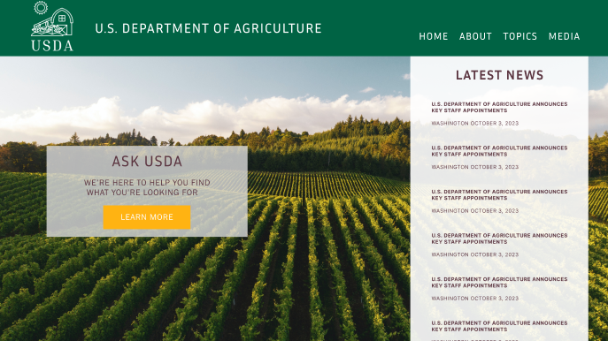

Hi, I’m Joy - a recent UX/UI UNCC Bootcamp graduate from Charlotte, NC.
Water Fowl Rescue Project
We recreated the Carolina Waterfowl Rescue webpage.

USDA Project
An updated design of the USDA website.